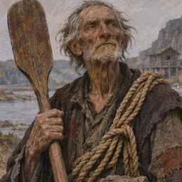
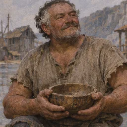
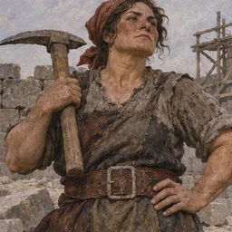
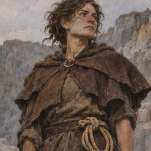
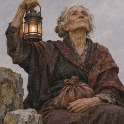

Вечер 1
Там, где кончился паром
Выбраться с оседающей пристани, собрать людей и выбрать добровольное начало общей экспедиции.
Открыть сценарий →Вы погибли при крушении парома и очнулись на берегу настоящего подземного мира. Последний перевозчик ещё знает дорогу обратно. Чтобы добраться до неё, придётся спуститься ниже рек, по которым уходят умершие, пройти сквозь сдвигающиеся пласты захоронений и решить, ради чего стоит снова увидеть солнце. У возвращения есть точная граница; узнать её необходимо прежде, чем соглашаться.

Перед чтением вступления сверьте место героев, присутствующих людей и предметы с итогом прошлого вечера. Если условия встречи отпали, сыграйте последствия там, где находится партия. Событие по расписанию может произойти за кадром. Герои узнают о нём от тех, кто был на месте.
Разложите имена по берегам до общего описания. Сыграйте прощание с двух сторон лодки. В восьмом вечере первый день под солнцем принадлежит только вышедшим, а оставшиеся сами выбирают свой первый день в Низовье.
Места на пароме не требуем. Останемся с теми, кому никто не объяснил порядок переправы. Собираем на берегу тех, кому ещё нужны объяснения. Лодка уходит без нас. Мы по-прежнему среди умерших и можем устроить ночлег на этом берегу.
Сверим обломок киля с календарём возвращения и прямо спросим Ильму, какой срок нам предлагают. Доступные свидетельства — Обломок киля, Календарь одного возвращения. Паром погиб по-настоящему. Даты Урса указывают на один солнечный год возвращения. Просим Урса применить обе даты к одному переходу. Крушение произошло на самом деле. Каждый решает о годе для себя; доказанная длительность не обязывает садиться в лодку.
Теряем спуск, лодка отходит прежде, чем отряд подойдёт к ней. Сверяемся с Урсом о пешем пути для желающих. Ищем пеший путь Урса и провожаем тех, кто выбрал остаться. Этот рейс и время на него потеряны.
Для игры без подготовки: что говорят люди, места в стороне от главной дороги и прохожие. Пометки о правде слухов — только для ведущего; сказанное за столом становится фактом мира, лишь когда вы его подтвердите.
«Наверх выпускают только на год. Ровно на год, и ни днём больше. А потом обратно, сюда, и уже насовсем».
Правда. Это главное правило Устья, и оно не тайна: Остен говорит его прямо в вечере 1, его читают на уступе, в лагере и под водосливом. Слух удобен, чтобы никто за столом не надеялся на скрытую лазейку.
«Второй год купить можно. Приведи к Устью кого-нибудь вместо себя — и живи дальше, пока он тут за тебя лежит».
Неправда. Ложь, которую шепчут от страха. Чужая жизнь не плата, срок не передаётся и не продлевается. Любая надпись у кромки опровергает это одной строкой; хорошая реплика для перепуганного новичка на Берегу крушения.
«Ильма никого вниз не пустит. У неё целая армия мёртвых, и все с баграми».
Отчасти правда. Сторонники у Ильмы есть, и они согласились задерживать путников и удерживать лодку, но не убивать. Их согласие ограничено, и в этом её слабость (вечера 5–7). Никакой армии и новых сил у неё не появляется.
«Урс из лагеря уже ходил наверх и вернулся. Записи у него открытые, на общем столе: читай кто хочет, только землю с них стряхни».
Правда. Так и есть: Урс прожил свой год и оставил полный пеший путь на общем столе (вечер 3). Слух лишь подсказывает, где искать свидетельство, и ничего не добавляет к правилу.
«Кто подержит руку в светлой полосе на уступе, у того год уже начался. Назад дороги нет».
Неправда. Неправда: проба на Пробном уступе обратима, отведённая рука снова холодеет, год не начинается (вечер 2). Гевен охотно покажет это на себе. Слух объясняет, почему у чаши всегда кто-нибудь мнётся и не подходит.
«На Безмолвной полке не кричите, всё равно не услышат. Там руками говорят, как глухие на ярмарке».
Правда. Правда: звук на полке уходит вверх и пропадает, путники общаются знаками с плиты (вечер 6). Слух готовит группу заранее договориться о своих сигналах.
«Остен реки боится. Говорят, однажды он уже сорвался на отвесе вместе с лодкой и с тех пор туда не гребёт».
Отчасти правда. Страх у Остена настоящий, и он сам признаётся в нём в вечере 3, обещая заранее научить добровольца. Подробности прежнего падения никто не знает, и рассказчики их додумывают. Лодку на отвесе может вести любой герой.
«Устье закрывается, как ворота. Не успел до срока — жди потом сто лет на пороге».
Неправда. Ложь: Устье открыто постоянно, скрытого срока нет, створок и механизма закрытия не существует (вечер 7). Торопят только люди и местность. Слух удобно развеять словами Остена о свете, который не гаснет.
«На Сползающих могилах земля едет, а камень под ней стоит. Ходи по светлому камню и по одному — тогда дойдёшь».
Правда. Это правило склона, его повторяет Нела в вечере 4. Слух не заменяет осмотра трещин, но помогает игрокам понять, почему нижний обход медленнее и надёжнее.
«Кто дошёл до самой черты и повернул назад, тот трус. Таких в лагере за версту видно».
Отчасти правда. Поворачивают у черты многие, и это правда; Сетра сама так сделала. Но отказ до кромки свободен и ничего не стоит, трусостью его считают только злые языки. Слух помогает показать, что выбор остаться так же честен, как переход.
«Тут вещи тонут быстрее людей. Хочешь дойти — бросай лишнее у первой же воды».
Правда. Поговорка перевозчиков, её говорит Остен ещё на пристани. Это совет, а не правило: группа сама решает, что нести. Слух хорошо звучит у полок общего хранения в лагере.
Невысокая груда обуви у края Берега крушения: башмаки, сапоги, деревянные сабо, все без пары. Вода отдаёт прибывших вместе с одним башмаком, второй остаётся наверху, и по обычаю непарный башмак кладут сюда, прежде чем идти вниз. Говорят, так легче расстаться с прежней дорогой. Самые нижние башмаки окаменели от ила, верхние ещё мокрые.
Валун у широких ступеней к Пробному уступу, на котором вытерты две гладкие ямки, точь-в-точь под ладони. Прежде чем подняться к чаше, здесь останавливаются и упираются в камень руками, будто проверяют, твёрд ли ещё мир. Кто так придумал, никто не помнит. Ямки холодные, но к ним всё равно подходят по одному, не толкаясь.
Через ручей между лагерем и склоном перекинут киль старой лодки, перевёрнутый вверх брюхом и прибитый к камню скобами. Ступать по нему приходится боком, держась за натянутую верёвку. Жители лагеря уверяют, что это лодка одного из прежних перевозчиков и что её хозяин сам велел пустить её на мост, когда перестал грести.
Неглубокая выемка в стене Подруслового хода, где на сухой полке разложены найденные по дороге мелочи: ложки, пуговицы, гвозди, напёрсток, чьё-то кольцо из проволоки. Всё это потеряли путники, и всё ждёт хозяев. Брать отсюда можно только своё; чужое трогать считается хуже кражи. Над нишей углём написано: «Узнал — забери».
Ступени, вырубленные в береговой скале выше лагеря и обрывающиеся в глухой стене после третьего десятка. Куда их вели, неизвестно; одни говорят, первый перевозчик искал короткую дорогу, другие — что кто-то хотел подняться обратно к могилам. На верхней ступени всегда лежит несколько камешков: их кладут те, кто забрался посмотреть.
Узкая расщелина у Последней высадки, куда снизу затекает свет Устья, и камень в ней чуть теплее, чем вокруг. Здесь сушат рукавицы и греют пальцы те, кто ждёт отставших. В расщелину помещаются только две руки, поэтому ждущие греются по очереди и между делом рассказывают друг другу, кого ждут.
Худой мужчина с мотком мокрой верёвки на шее и пальцами, стёртыми до блеска.
«Узел вяжут на берегу, а не над провалом. Над провалом его только проверяют».
Может рассказать: Вьёт верёвки для лагеря и знает, что связки, засыпанные осыпью, ещё можно откопать, если не тянуть их за концы.
Сутулый старик с плечами гребца и обмотанными тряпками ладонями; сидит у воды и смотрит на течение.
«Я своё отгрёб. Теперь только смотрю, кто как весло держит».
Может рассказать: Когда-то грёб у прежних перевозчиков и подтверждает: обычную лодку вдвоём вести можно, если меняться до усталости, а не после.
Крепкая женщина с закатанными рукавами и корытом на бедре; руки красные от холодной воды.
«Давайте сюда мокрое. Сохнуть у нас ничего не сохнет, но хоть ил отстираю».
Может рассказать: Стирает одежду прибывших на Берегу крушения и знает место у воды, куда течение чаще всего выносит новых людей.
Невысокий мужчина в очках без стёкол, с дощечкой и угольком; ставит зарубки, шевеля губами.
«Сколько пришло, столько и записал. Кто куда ушёл — это уже не моё дело».
Может рассказать: Считает прибывших у причальной тумбы и может сказать, что большинство новеньких сначала идут к Пробному уступу, а не к лагерю.
Пожилая женщина с мешком серых обрезков ткани; на запястье намотана нитка с иглой.
«Рвань не выбрасывай. Из трёх рваных платков выйдет один целый».
Может рассказать: Знает швею Эмму из лагеря по работе и говорит, что та сердится громко, а помощь принимает, если ей сперва всё объяснить.
Плотный мужчина с зубилом за ухом и каменной крошкой в бороде; на коленях кожаные наколенники.
«Стрелку надо резать глубоко. Мелкую сотрут ладонями за один год».
Может рассказать: Подновляет стрелки на тумбах и стенах и подтверждает, что все они, сколько ни режь, показывают вниз, к одному выходу.
8 сессий по 180 минут: 10 минут вступления и повторения, три сцены по 45 минут, перерыв 15 минут, заключение 20 минут. Подготовленные герои — уровень 3. Прочитайте первую сессию, выберите состав и передайте игрокам отдельную страницу героев.
В мастерской создайте или откройте свой черновик, выберите импорт пакета и укажите package.json либо нужный файл из variants. Проверьте сценарий и состав в предпросмотре; активацию подтверждает ведущий. Сюжетные развилки, часы давления и жанровые действия разрешаются ведущим — они не становятся автоматически сыгранными событиями.
Пакеты разных размеров используют первые N героев в порядке карточек. Дополнительные герои дают новые роли, но не обязательные ключи к истории. Выбор произвольного состава требует правки черновика и повторной проверки.
Холодная вода, тяжёлый труд, страшная глубина и бережная прямота. Жестокость рождается из попытки решить за другого, какую потерю тот выдержит.
Выбраться с оседающей пристани, собрать людей и выбрать добровольное начало общей экспедиции.
Открыть сценарий →Получить полное правило возвращения и самостоятельный маршрут, не принимая окончательного решения.
Открыть сценарий →Проверить независимое свидетельство, подготовить снаряжение и решить, что группа действительно понесёт в глубину.
Открыть сценарий →Пройти движущийся склон, решить вопрос помощи без принуждения и самостоятельно найти сухой ход к Устью.
Открыть сценарий →Решить, как пройти физическое задержание: освободить лодку, прекратить преследование либо сознательно воспользоваться пешим обходом.
Открыть сценарий →Провести всю группу по глубинному участку, сохранив связь и реально доступный путь к последней высадке.
Открыть сценарий →Обеспечить общий доступ к месту личного выбора, не навязывая ни возвращения, ни отказа.
Открыть сценарий →Завершить общую работу, получить личные свободные решения и сыграть последствия без отмены смерти или обещанного счастливого исхода.
Открыть сценарий →
Сухой старик с обычным веслом и верёвкой через плечо; сапоги заплатаны разной кожей.
Называет себя последним перевозчиком и предлагает сначала выслушать условия дороги.
Провести ещё один добровольный рейс и затем прекратить работу, не назначая себе замену.
Боится отвесного участка реки после прежнего падения. Может отказаться вести лодку именно там, но готов заранее обучить любого добровольца.
Не выбирает за пассажиров, не требует обета службы и не управляет лодкой после прямо объявленного отказа.
При разговоре о следующем участке прямо говорит о страхе, показывает приёмы гребли на мелководье и предлагает пеший путь.

Высокая женщина в тёмной накидке; несёт фонарь и тяжёлые рабочие рукавицы.
Собирает покойников для помощи прибывающим и открыто считает обратные путешествия опасными.
Остановить этот рейс и убедить героев отказаться от возвращения, которое она считает повторной жестокостью к живым.
Уже поручила Борру удерживать лодку. Готова повредить один пеший проход, если увидит обход, но её люди не соглашались убивать или лишать кого-либо существования.
Может спорить и препятствовать руками, но не назначать цену возвращения и не выдавать свою боль за закон Низовья.
Если её спрашивают о личном опыте без обещания послушаться, рассказывает о годе Урса; прямой отказ не гарантирует её уступки.

Плотный мужчина с седыми висками, короткой рубахой и вытертой деревянной миской.
Живёт у открытого очага и оставляет путевые записи доступными каждому.
Чтобы люди знали полные условия и не использовали его опыт как доказательство обязательного выбора.
Не жалеет о своём возвращении, хотя понимает боль Ильмы. Их несогласие осталось после смерти; он не может простить или согласиться вместо неё.
Не следует за героями как доказательство на привязи и не обещает переубедить Ильму.
За обычным разговором рассказывает о сроке, затем отдаёт копию описания пути; никакой платы или проверки убеждения не требует.

Коренастая каменщица с плоской киркой и широким ремнём; под ногтями серый песок.
Укладывает настилы между ползущими пластами земли и предупреждает о треске породы.
Вывести застрявшую Эмму на устойчивую полку и не дать помощникам погибнуть из-за поспешности.
Старый верхний настил больше не держит группу одновременно. Она стыдится, что слишком долго надеялась обойтись без переноса тропы.
Не подтверждает догадки о законах возвращения и не заставляет спасать её настил вместо людей.
При осмотре трещин показывает нижний обход и признаёт ошибку; при отказе героев спасать сама отступает по безопасной тропе.

Мужчина с перевязанным коленом и деревянным багром; на куртке белый шов.
Дежурит у эллинга и просит не спускать лодку без разговора с Ильмой.
Не допустить, как ему сказали, принудительного рейса и опасной давки на спуске.
Согласился удержать имущество, но не сражаться до смерти. Убедительное личное согласие пассажиров ставит под сомнение сам смысл его работы.
Не слышал всех условий Устья и не вправе притворяться их знатоком; отступает, если приказ требует калечить безоружных.
После прямого вопроса о границах поручения повторяет его точно. При несовпадении с действиями Ильмы выбирает сам; ведущий не считает убеждение автоматическим контролем.

Женщина в коротком плаще с верёвочной петлёй на поясе; на лице пыль светлого камня.
Ходит между лагерем и нижними полками, собирая пригодные для обычного быта вещи.
Сохранить доступную тропу, хотя сама не собирается возвращаться.
Дошла до последней кромки и отказалась. Не хочет превращать отказ в должность мудрой наставницы для всех прибывших.
Не объясняет чужие личные причины и не требует, чтобы отказавшиеся присоединились к её образу жизни.
Показывает непрерывную тропу и рассказывает о собственном отказе, если герои не требуют оправдать его.

Лысый мужчина с полотняной сумкой; раскладывает плоские камни по краю чаши.
Помогает новичкам безопасно подойти к светлой полосе воздуха.
Не дать толпе столкнуть человека через ещё не понятую границу.
Сам пока не выбрал, хочет ли возвращаться. Его осторожность — личная нерешительность, а не знак скрытой власти над порогом.
Не умеет разрешать чужое возвращение и не знает ни планов Ильмы, ни того, что сделают герои.
Показывает собственную обратимую пробу, затем отходит, оставляя участникам право смотреть, пробовать или отказаться.

Пожилая женщина с ровной спиной и узелком ткани; сидит на уступе и держит фонарь над головой.
Швея из лагеря, отрезанная сместившимся земляным пластом.
Вернуться в лагерь своими ногами или с согласованной помощью; не желает, чтобы её несли к выходу в живой мир.
Спрятала испуг за резкими указаниями. Готова принять помощь, если ей сначала объяснят, куда и как собираются её вести.
Её возраст не отменяет согласия; отказ от возвращения не означает отказа от спасения.
Отвечает на конкретные вопросы о виденном, сразу предупреждает про зажатую верёвку и выбирает удобный способ помощи.
Страна мёртвых под дном всех могил. Над головой тянутся днища кладбищ, корни и камни; внизу — отвесные берега, неподвижные селения умерших и реки, которые текут не к морю, а вниз, к невидимому солнцу. Здесь устают, мёрзнут и ушибаются, как наверху. Свет идёт из глубины, поэтому тени ложатся вверх.
Чёрная галька, остатки оседающей пристани и мокрые вещи прибывших: сумки, башмак, размокшая карта. Далеко наверху темнеет поверхность воды, под которой затонул паром, и оттуда изредка падают крупные медленные капли. У причальной тумбы с вырезанными стрелками начинаются две дороги вниз. Пахнет илом и холодным деревом.
Каменная чаша на уступе над отвесом, обложенная по краю плоскими камнями. По стене проходит узкая полоса светлого воздуха, тёплого на вид, а рядом высечены неглубокие слова. Широкие ступени ведут вниз, к нижней тропе. Здесь всегда кто-нибудь стоит и не решается подойти; говорят вполголоса, как в приёмной у лекаря.
Низкие домики из светлого плавника стоят под наклонным пластом могильной земли, нависшим над ними, как козырёк над крыльцом. На открытом общем столе лежат путевые записи и доска с датами, у очага сохнут верёвки и чьи-то чулки. Земля с потолка сыплется постоянно, и жители давно привыкли подметать её к стене.
Пласты могильной земли медленно съезжают по гладкой тёмной породе, и вместе с ними ползут старые настилы. Между пластами зияют провалы; деревянные мостки, площадки для отдыха и вбитые колья показывают, где ходили раньше. Слышно, как сухо потрескивает порода и шуршит осыпающийся песок. Ходят здесь по одному и не спеша.
Коридор под прозрачным дном реки: над головой течёт вода, и сквозь неё скользят тени лодок и рыб, каких не бывает в живых реках. Внизу тянется сухая полоса камня; у водослива она раздваивается. На стенах — строки старой надписи и стрелки, вырезанные разными руками. Вода звучит глухо, как за стеной соседнего дома.
Крытый спуск к воде из чёрных просмолённых досок, где давно не зажигали фонарей. Внутри — козлы для вёсел, мотки верёвки и обыкновенная широкая лодка на полозьях. Пахнет смолой и сырым деревом. С внешней стороны строения, вдоль стены, виден светлый обход к пешему карнизу; у дверей обычно кто-то дежурит.
Широкий выступ между двумя провалами, поросший в расщелинах белым мхом. Звуки здесь уходят вверх и пропадают, так что даже крик долетает шёпотом, а путники общаются жестами. На большой плите вырезаны старые знаки со сглаженными краями. Камень сухой и устойчивый; здесь удобно остановиться и пересчитать своих.
Вода здесь не течёт, а падает — почти отвесно, широким шумным полотном, уходящим в свет. Рядом извивается непрерывный каменный карниз, местами широкий, как улица, местами такой, что идти можно только по одному. Брызги оседают на камне ледяной росой. Светлые потёртости на выступах показывают, где когда-то проводили лодки.
Просторная сухая площадка, где сходятся лодочный причал, верхний карниз и нижняя пешая тропа. Камень вытоптан до блеска многими поколениями путников, на столбе у края вырезаны строки разными руками. Отсюда видна светлая линия глубоко под ногами — Устье, до которого остаётся последний спуск. Здесь ждут отставших и прощаются с теми, кто дальше не пойдёт.
Самая низкая точка Низовья. Вода падает в узкую полосу настоящего дневного света, и от неё на лица ложится тепло, какого здесь больше нигде нет. Вдоль света тянется широкая сухая кромка, на которой можно стоять, сидеть и разговаривать сколько угодно. На камне перед светом прорезана одна поперечная черта.
Условия: Группа достигла Устья и обеспечила добровольный доступ; каждый участник отдельно принял точный срок.
С согласия ведущего выбравшие переход возвращаются вместе на ближайшем безопасном берегу у места крушения в нынешнем времени. Они получают возможность прожить один год, не отменяя истории и чужих решений.
Цена: Через год последует окончательная смерть и жизнь в Низовье без повторного возвращения; опасности живого мира могут оборвать год раньше. Никаких гарантий примирения, власти или исполнения желаний.
Условия: Доступ обеспечен, часть героев желает вернуться, часть выбирает остаться; решения даны лично и без обмена.
Возвращающиеся уходят на год, остающиеся провожают их и выбирают место в Низовье. Общая победа — открытая дорога и уважение к разным решениям.
Цена: Друзья расстаются; ни одна сторона не получает власть над сроком другой. Оставшийся не обязан становиться перевозчиком и не платит своим существованием за товарища.
Условия: Все герои свободно отказываются от возвращения; они могут довести экспедицию ради других либо закончить её раньше.
Группа остаётся в Низовье и выбирает совместное дело или разные места рядом. Если путь был открыт, следующие взрослые умершие решают за себя; если нет, победу над запретом не объявлять.
Цена: Живые не увидят героев вновь. Отказ не приносит тайной награды, бессмертия или морального превосходства; это действительный финал, а не ошибочный ответ.
Условия: Группа отступила, сдала доступ Ильме или потеряла оба заранее обозначенных маршрута и выбрала безопасный лагерь.
Оказавшиеся у Устья и согласившиеся могут перейти; остальные остаются в Низовье. Если никто не достиг выхода, возвращения нет. Ведущий фиксирует реальные местоположения и не переносит героев через препятствие задним числом.
Цена: Утрата снаряжения, разлука и незавершённый путь сохраняются. Для нового похода понадобится отдельное решение и работа; пропуск игроком встречи никогда сам по себе не создаёт этот исход.
Авторская подготовка и техническая проверка не заменяют живую игру. Длительность, сложность и эмоциональное восприятие пока не проверены группой. Картину первой встречи можно открыть отдельно. Тактические схемы построены из данных встреч. Полный каталог содержит материалы ведущего — публиковать его целиком для игроков нельзя.